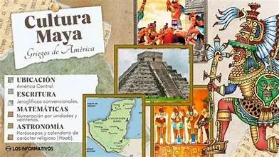

¿Cuánto sabes de nuestra tierra? Elige una respuesta en cada pregunta y da clic en Calificar.
1. ¿Cómo se llama la famosa pirámide de Chichén Itzá dedicada a Kukulcán?
2. ¿En qué año Chichén Itzá fue nombrada una de las Nuevas 7 Maravillas del Mundo?
3. ¿Qué platillo yucateco se prepara con achiote y se cocinaba bajo tierra?
4. En los equinoccios, ¿qué se ve en la escalinata de El Castillo?
5. Hace unos 66 millones de años un asteroide cayó cerca de Chicxulub, Yucatán. ¿Qué se cree que provocó?